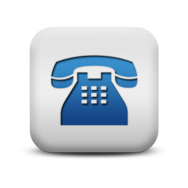

AUTO SOCORRO MINAS BRASIL
24 HORAS
PAGAMENTOS EM PIX E DINHEIRO
NOSSA MISSÃO!
Trabalhamos para que pessoas e empresas possam usufruir de serviços de remoção e transporte com eficácia, qualidade e segurança.
Gerar crescimento econômico, empregos e bem estar social.
Superar as expectativas e encantar nossos clientes.
Visão
Expandir constantemente nossa atuação no mercado nacional e internacional.
Atualizar constantemente nossa estrutura, encantar nossos clientes e parceiros comerciais superando suas expectativas.
E principalmente atingir estes objetivos investindo em nossa equipe de profissionais, ajudando-os a se supera e evoluir, para que possam se sentir felizes e prósperos fazendo parte da família Auto Socorro Minas Brasil.
Valores
Honestidade
Humildade
Confiabilidade
Respeito
Comprometimento
Praticidade
Competência
Desenvolvimento Constante
Firmeza
Justiça
Contatos
Rua Ceará, 36 - Poço Rico, Juiz de Fora - MG, 36020-130, tel: (32)99991-4755
Link do mapa para direcionar o GPS da Google até o endereço da empresa.

PENSOU EM PROTEÇÃO PARA SEU VEÍCULO?
PENSOU APOIO!
Contato 24 horas: (32)3213-8978 / 3218-4613 / 98816-8522 / 99119-8259
E-mail: apoiojf@hotmail.com
Contrate agora!

EMPRESAS PARCEIRAS AUTO SOCORRO MINAS BRASIL
Marcas que representamos
CUIDADOS COM SEU CARRO:
MANUTENÇÃO PREVENTIVA NO SEU VEÍCULO
1. Alinhamento da direção
Percebeu que os pneus de alguns veículos estão mais gastos de um lado e que os motoristas reclamam de ruídos ao fazer uma curva? Um dos motivos pode ser o alinhamento da direção, ou melhor, das rodas. Esse é um procedimento barato que costuma evitar uma série de gastos extras.
O alinhamento deve ser realizado pelo menos a cada 10 mil quilômetros rodados ou sempre que você, ou algum motorista da frota, notar algo estranho. Batidas em guias, buracos ou desgaste em várias peças podem afetar esse alinhamento, ainda que ele tenha sido efetuado há pouco tempo.
2. Rodízio dos pneus
Outro fator importante é o rodízio de pneus. Apesar de muitos dizerem que não, ele deve ser feito e evita o desgaste irregular desses componentes, além de aumentar a vida útil deles. O ideal é que ele seja efetuado com o balanceamento e alinhamento das rodas, ou seja, a cada 10 mil quilômetros rodados.
Porém, existe um detalhe: a forma como isso deve ser concretizado muda de acordo com o tipo de veículo e até mesmo conforme o pneu usado. Sempre consulte um especialista e não se esqueça de colocar tal medida na lista de manutenção da frota. Afinal, essa é uma boa maneira de economizar.
3. Checagem da correia
Eis um dos componentes mais importantes, a famosa correia dentada. Ela está presente em muitos veículos e sua função é sincronizar o comando de válvulas com os pistões. Se ela quebrar ou não fizer o seu trabalho direito, o resultado pode ser um dano catastrófico no motor.
or isso, a manutenção corretiva não é indicada para esse item. Ele deve ser constantemente revisado e a troca precisa ser realizada entre 30 mil e 50 mil quilômetros rodados, dependendo das especificações do fabricante. Mesmo que a correia esteja em boas condições após tal período, faça a substituição.
4. Verificação da água e óleo
Água é óleo são elementos fundamentais para manter a temperatura do motor nos padrões, pois, se um deles faltar ou não fizer o seu trabalho direito, os resultados podem ser ruins. No caso da água, verifique o nível constantemente e faça a troca a cada 30 mil quilômetros rodados ou de acordo com o fabricante do veículo.
Já no caso do óleo, nada de completar. Essa é uma técnica errada e perigosa. Esse fluido dever manter seu nível até a troca ser necessária — entre 5 mil e 10 mil quilômetros ou um ano. Caso ele baixe muito, existe algum problema que precisa ser corrigido. Ao simplesmente completar, você pode contaminar o material novo e impedir a sua eficácia total.
5. Atenção ao escapamento
Alguns detalhes muito importantes são a cor e o volume de fumaça que sai do escapamento. Se ela estiver em alta quantidade, pode indicar queima excessiva de óleo, principalmente se for azulada. Caso esteja preta, tende a vir acompanhada de um consumo exagerado de combustível. Em ambas as situações, procure um especialista para realizar uma inspeção.
Uma gestão de frotas moderna e eficiente passa por um bom controle da manutenção de veículos, e, como você viu, alguns itens podem trazer muita dor de cabeça se forem negligenciados. Por isso, não deixe para depois e aposte na manutenção preventiva para evitar problemas.
Está em dúvida sobre manutenção? Então conheça os principais tipos e qual o mais indicado em cada situação!